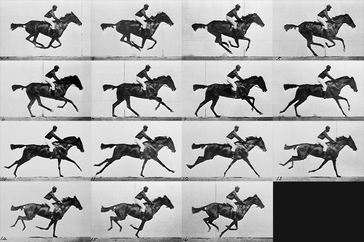
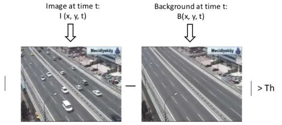
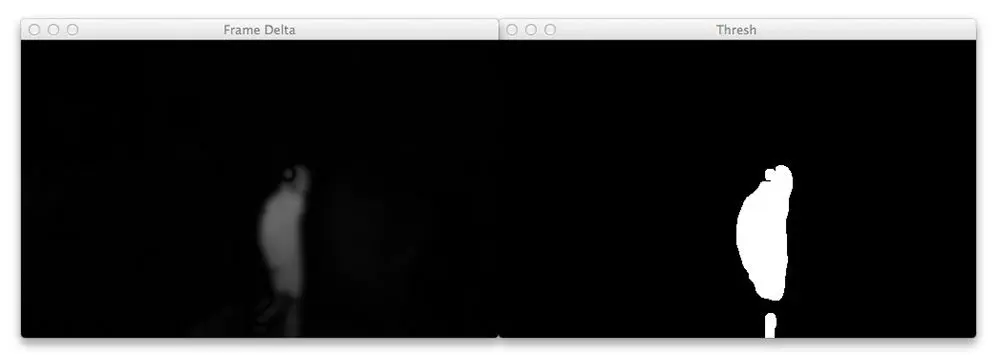

Day 3
Introduction
Today, we will take another step in our overall goal of creating a smart security system. Through our camera feed, we want to determine whether there is someone (or something) in the frame. To do this, we will use our knowledge of OpenCV to detect motion.

How do we achieve this?
Well, first we need a way to stream the camera feed. In the past, we successfully captured still images from the camera, and even showed a preview of the feed for a few seconds. But now, we need a way to access the camera feed in a Python script.
We would then need to figure out a way to detect any motion in the stream. We'll get back to this later, but for now, think of some ideas about how we can detect motion. Think about what exactly the "motion" is in terms of a stream of images. After all, a video is just a set of still images that you view in rapid succession.
1. Steady Camera Stream
First things first, let's stream the camera in Python. To do this, we will need the picamera module. Run the following in the terminal to download the necessary packages:
xxxxxxxxxx$ python3 -c "import picamera"a) Access Single Images
Let's start by accessing a single image from the camera stream. Create a new Python file called motion_detection.py
First, import the required libraries
xxxxxxxxxx# import the necessary packagesfrom picamera.array import PiRGBArrayfrom picamera import PiCameraimport timeimport cv2We then need to initialize a camera by calling PiCamera(). This will give us a reference to the raw camera capture component. The raw_capture object is especially useful since it gives us direct access to the camera stream and avoids the expensive compression to JPEG format, which we would then have to take and decode to OpenCV format anyway.
Let's also change the camera resolution to 640x480 pixels. This dimension is arbitrary, but it will standardize our outputs later on.
xxxxxxxxxxcamera = PiCamera()camera.resolution = (640, 480)raw_capture = PiRGBArray(camera, size=(640, 480))time.sleep(1) # allow time for the camera to warmupNext, we will capture a frame by calling capture() on the camera object we previously created. Being aware that the format is BGR and not the traditional RGB. This is extremely important because OpenCV represents images as Numpy arrays in BGR order rather than RGB. This little nuance is subtle, but very important to remember as it can lead to some confusing bugs in your code down the line.
xxxxxxxxxx# grab an image from the cameracamera.capture(raw_capture, format="bgr")image = raw_capture.arrayNow, let's display the image on the screen by using cv2.imshow().
xxxxxxxxxxcv2.imshow("Image", image)cv2.waitKey(0) # wait indefinitely until a key is pressedTest that this is working by running
xxxxxxxxxx$ python3 motion_detection.pyb) Constant Streaming
Now that we have successfully used OpenCV to grab a single image from the camera, let’s move on to a video stream.
The concept is similar to how we got a single image above. But instead of calling capture on the camera object, we will call capture_continuous instead. Intuitively right?
But in order to process each individual frame in this continuous stream, we will need a for loop:
xxxxxxxxxxfor frame in camera.capture_continuous(raw_capture, format="bgr", use_video_port=True): image = frame.arrayThe capture_continuous method returns a frame from the video stream. The frame then has an array property, which corresponds to the frame in Numpy array format. So, in order to get the image frame itself, we have to call frame.array to get the Numpy array representation of the image.
Also, within the loop, we have to clear the raw_capture stream to get ready for the next frame.
xxxxxxxxxxraw_capture.truncate()raw_capture.seek(0)Finally, let’s wait for an "escape" key to be pressed in order to exit out of the infinite loop.
xxxxxxxxxxkey = cv2.waitKey(1) # get the key pressed in the last millisecondif key == ord("q"): breakIn summary, you should have the following code in motion_detection.py
xxxxxxxxxxfrom picamera.array import PiRGBArrayfrom picamera import PiCameraimport timeimport cv2# initialize the camera and grab a reference to the raw camera capturecamera = PiCamera()camera.resolution = (640, 480)raw_capture = PiRGBArray(camera, size=(640, 480))# allow the camera to warmuptime.sleep(1)
# capture frames from the camerafor frame in camera.capture_continuous(raw_capture, format="bgr", use_video_port=True): # grab the raw NumPy array representing the image, then initialize the timestamp # and occupied/unoccupied text image = frame.array # show the frame cv2.imshow("Frame", image) # clear the stream in preparation for the next frame raw_capture.truncate() raw_capture.seek(0) # exit the loop when `q` is pressed key = cv2.waitKey(1) if key == ord("q"): breakTo run this program, go to the terminal and execute
xxxxxxxxxx$ python3 motion_detection.py2. What's the Difference?
Now, let's revisit our initial question. How do we detect motion within a camera stream? Hint: think of the camera stream as a series of image frames that are just shown in rapid succession.

What exactly is "motion" anyways? In the example above, we see that there are minor differences between each frame. If you put all of these minor differences together, you get "motion".

Today, we will explore what it means to use background subtraction between frames to detect motion.
What is Background Subtraction
Background subtraction is critical in many Computer Vision applications. We use it to count the number of cars passing through a toll booth. We use it to count the number of people walking in and out of a store.
And we will now use it for motion detection.
The base of this approach is that of detecting moving objects from the difference between the current frame and reference frame, which is often called ‘Background Image’ or ‘Background Model’. This background subtraction is typically done by detecting the foreground objects in a video frame and foreground detection is the main task of this whole approach.
Any robust background subtraction model should be able to handle light intensity changes and repeated motion from long term scene changes. The analysis of such an approach mathematically can be modeled using a function P(x,y,t) as a video sequence where t is the time dimensions x and y are the pixel locations.

Mathematically it can be modeled as:
xxxxxxxxxx|reference_frame – current_frame| > Threshold
This approach can be used when segmenting motion-based objects such as cars, pedestrians etc.
And it is very sensitive to threshold values. So depending on object structure, speed, frame rate and global threshold limit, this approach has limited use cases.

We will use background subtraction to detect motion because the background of our video stream is largely static and unchanging over consecutive frames of a video. Therefore, if we can model the background, we monitor it for substantial changes. If there is a substantial change, we can detect it — this change normally corresponds to motion in our video.
Implement Background Subtraction
Let's go back to our previous motion_detection.py file.
Instead of showing the frame or image by 'cv2.imshow("Frame", image)', we should check if image is None; as well as setting a default message of "Not Detected" to variable maybe_motion_text and later change it once we detect any motion.
xxxxxxxxxxmaybe_motion_text = "Not Detected"if image is None: breakThen, We will need to augment the incoming images. Let's convert the image to grayscale, as color has no bearing on motion detection other than adding noise to the data. We also apply Gaussian blurring to smooth our images.
xxxxxxxxxxcurrent_frame = cv2.cvtColor(image,cv2.COLOR_BGR2GRAY)current_frame = cv2.GaussianBlur(current_frame,(21,21),0)Due to tiny variations in the digital camera sensors, no two frames will be 100% the same — some pixels will most certainly have different intensity values. That said, we need to account for this and apply Gaussian smoothing to average pixel intensities across an 21 x 21 region. This helps smooth out high frequency noise that could throw our motion detection algorithm off.
For simplicity, let’s assume that the first frame we capture will contain no motion and just background. (Make sure the assumption is satisfied when you run the program.) So, we will store the first image input as the reference frame. Don't forget to set reference_frame to None initially!
xxxxxxxxxxif reference_frame is None: reference_frame = current_frame continueHere, if we see that there is currently no reference frame, we will use the image input as the reference frame and continue on to the next frame.
Now that we have our background modeled via the reference_frame variable, we can utilize it to compute the difference between the initial frame and subsequent new frames from the video stream.
Let's compute the absolute difference between the current frame and the reference frame.
xxxxxxxxxxframe_delta = cv2.absdiff(reference_frame,current_frame)thresh = cv2.threshold(frame_delta, 25, 255, cv2.THRESH_BINARY)[1]Dilation fills holes and connects areas; it makes small differences a bit clearer by increasing the size and brightness. Thus, we can unite the little boxes together to form bigger detecting bounding boxes.
xxxxxxxxxxthresh = cv2.dilate(thresh,None,iterations=2)This will take the pixel density difference between the current and reference frames using the following formula:
xxxxxxxxxxdelta = |reference_frame – current_frame|
Now, we can use cv2.threshold to reveal regions of the image that only have significant changes in pixel intensity values. If the delta is less than 25, we discard the pixel and set it to black (i.e. background). If the delta is greater than 25, we’ll set it to white (i.e. foreground).
It will look something like this: 
Given this thresholded image, it’s simple to apply contour detection to find the outlines of these white regions. Don't forget to import imutils!
xxxxxxxxxxcnts = cv2.findContours(thresh.copy(), cv2.RETR_EXTERNAL, cv2.CHAIN_APPROX_SIMPLE)cnts = imutils.grab_contours(cnts)We will now loop over each of the contours, where we’ll filter the small, irrelevant contours. If the contour area is larger than a pre-determined min_area value, we’ll draw the bounding box surrounding the foreground and motion region. We will use 15 as a default value for min_area so don't forget to initialize your 'min_area' as 15.
xxxxxxxxxxfor c in cnts: if cv2.contourArea(c) < min_area: continue (x,y,w,h) = cv2.boundingRect(c) cv2.rectangle(image,(x,y),(x+w,y+h), (0,255,0),2)And that is all! We have just detected motion!
To review, here is what we accomplished:
- use the first frame in the camera feed as the reference frame
- process each frame in a constant camera feed against the reference frame
- each frame is converted to grayscale and a Gaussian blur was applied (can you remember why the Gaussian filter was needed?)
- take the difference in pixel density between the reference frame and each subsequence frame
- find the "contours", where there is an obvious difference in pixel density (above a given threshold)
- for each contour, if it is larger than a pre-determined min_area threshold, draw a bounding box to label it as detected motion
Wrapping Up
To wrap up, let's visualize everything we have computed above using cv2.imshow.
First, let's show whether motion was or was not detected, along with the date. Don't forget to import datetime!
xxxxxxxxxxcv2.putText(image, "Motion: {}".format(maybe_motion_text), (10,20), cv2.FONT_HERSHEY_SIMPLEX, 0.5, (0,0,255),2)cv2.putText(image, datetime.datetime.now().strftime("%A %d %B %Y %I: %M: %S%p"), (10,image.shape[0]-10), cv2.FONT_HERSHEY_SIMPLEX, 0.35,(0,0,255),1)Here, we use a maybe_motion_text variable to store whether there was motion. Think about where you need to initialize this variable and when to change it in your code. If you need help, look to the full code script below.
Now, let's open up three windows.
xxxxxxxxxxcv2.imshow("Feed", image)cv2.imshow("Threshold", thresh)cv2.imshow("Frame Delta", frame_delta)The first window will be our image (with bounding boxes around any detected motion). We will also open windows to show the frame delta and thresholded images (just for fun :D).
Full Python Program
xxxxxxxxxxfrom picamera.array import PiRGBArrayfrom picamera import PiCameraimport imutilsimport datetimeimport timeimport cv2
camera = PiCamera()camera.resolution = (640, 480)raw_capture = PiRGBArray(camera, size=(640, 480))time.sleep(1)reference_frame = None
min_area = 15
for frame in camera.capture_continuous(raw_capture, format="bgr", use_video_port=True): image = frame.array raw_capture.truncate() raw_capture.seek(0) maybe_motion_text = "Not Detected" if image is None: break
current_frame = cv2.cvtColor(image,cv2.COLOR_BGR2GRAY) current_frame = cv2.GaussianBlur(current_frame,(21,21),0)
if reference_frame is None: reference_frame = current_frame continue frame_delta = cv2.absdiff(reference_frame,current_frame) thresh = cv2.threshold(frame_delta, 25,255,cv2.THRESH_BINARY)[1] thresh = cv2.dilate(thresh,None,iterations=2) cnts = cv2.findContours(thresh.copy(), cv2.RETR_EXTERNAL, cv2.CHAIN_APPROX_SIMPLE) cnts = imutils.grab_contours(cnts) for c in cnts: if cv2.contourArea(c) < min_area: continue (x,y,w,h) = cv2.boundingRect(c) cv2.rectangle(image,(x,y),(x+w,y+h), (0,255,0),2) maybe_motion_text = "Detected" cv2.putText(image, "Motion: {}".format(maybe_motion_text), (10,20), cv2.FONT_HERSHEY_SIMPLEX, 0.5, (0,0,255),2) cv2.putText(image, datetime.datetime.now().strftime("%A %d %B %Y %I: %M: %S%p"), (10,image.shape[0]-10), cv2.FONT_HERSHEY_SIMPLEX, 0.35,(0,0,255),1) cv2.imshow("Feed", image) cv2.imshow("Threshold", thresh) cv2.imshow("Frame Delta", frame_delta) key = cv2.waitKey(1) if key == ord("q"): break
cv2.destroyAllWindows()